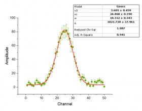

OriginProでは、モデルの比較ツールを使って、一つのデータの特定のカテゴリーでフィットしてから複数の関数の比較し、最もフィットしているモデルを求めることができます。結果は、赤池情報量基準(AIC)とベイズ情報量基準(BIC)スコアで比較します。
|  |
解析：フィット：モデルのランク付けを選択して、funcRank ダイアログを開き、でXファンクションfuncRankを使用します。このダイアログはXファンクションfuncRankを使います。
ダイアログ内の項目は次の表に記載されています。
| 再計算 | 分析の際の再計算モードを指定します。手動、自動、なしから選択してください。 |
|---|---|
| 入力データ形式 | データを選択し、XY Data や XYZ Data |
| 入力データ | 入力データ範囲。編集ボックスの右にある、三角形のボタンをクリックすると、XY(Yエラーバー)やXYZ列を選択できます。 |
| 関数選択 | 関数のカテゴリを指定し、このカテゴリ内の関数を指定して使用します。
|
| 反復回数の最大数 | 「フィット」ボタンをクリックしたときに実行する最大の反復数を指定します。デフォルトの値は100です。 |
| フィット結果オプション | 計算し、出力するための追加のデータを指定します。何も選択されないと、Status、AIC、BICが出力されます。
|
| レポートデータ | 結果を出力する場所を指定します。 |